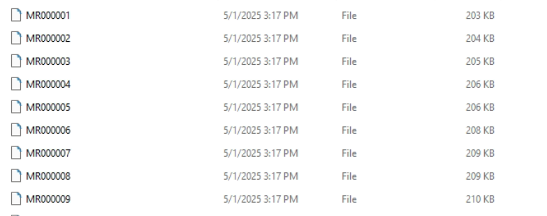

无文件类型MRI数据处理方法
在处理医学数据的时候遇到MRI数据未显示文件类型的状况，且不同序列的MRI混杂在一起无明显标记，只能通过软件打开后查看字段。
记录处理方法：DICOM转换为NIFTI
一、分析文件
文件显示如下：

- 文件无后缀名
- 文件中多序列MRI混杂
- 希望转化为
序列名称_nii.gz的样式
既然有软件能自动识别不同的序列，且能显示序列信息，说明这个数据是可以读取和通过代码区分的。
问题是，win上并没有显示文件类型，首先需要确定文件类型。
mimetypes检测文件类型失败
无需install，可直接import。
1 | import os |
检查文件类型，但是输出无法确定文件类型，可能是未知格式。
失败原因：它只看文件名的扩展名。但是现在需要处理的文件没有扩展名。
magic检测文件类型
Win：
1 | pip install python-magic-bin |
1 | import os |
python-magic 的工作原理：
- 它 不依赖文件扩展名（如 .txt、.jpg）来判断类型。
- 它通过读取文件前几个字节的内容(magic number) 来判断文件的真实类型。
- 例如：一个 PNG 文件的前几个字节是固定的
89 50 4E 47，而 PDF 文件开头是%PDF-1.x。
- 例如：一个 PNG 文件的前几个字节是固定的
这意味着即使你把 .jpg 文件改名成 .txt，它也能识别出它是 JPEG 图片。
这次输出的是：文件类型是: application/dicom
二、图像解码
将上数学信息交给AI后，使用import pydicom进行解析。
但是，出现解码像素失败的提示。
通过AI提示，我们首先分析传输语法：
1 | 传输语法: 1.2.840.10008.1.2.4.70 |
你遇到的错误说明：虽然 DICOM 文件可以被读取（即头信息没问题），但它的像素数据采用了 压缩编码（JPEG Lossless），而你当前环境 缺少支持解码这种压缩格式的库。
解决方案
把可能需要的解码插件全部install：
1 | pip install pylibjpeg pylibjpeg-libjpeg pylibjpeg-openjpeg |
和：
1 | pip install python-gdcm |
检查解码器状态
1 | import pydicom.pixel_data_handlers as pdh |
期望输出都是True
但是实际操作的时候，遇到了和Python版本不匹配问题：让GPT生成一个指定版本的install命令。
以及，install成功之后（在conda list中确定了该解析器存在）但始终输出为False，后来关关开开……uninstall和install来回搞了几次终于成功了，不知道到底是哪一步起了作用。
三、自动化处理
把上述信息处理好之后，丢给GPT，让他自动生成处理代码，下面对代码进行解析。
功能需求：
- 从raw处理到对应路径
- 按照序列划分nii
- 保存异常log
1 函数定义
1 | def convert_dicom_to_nifti(dicom_dir, output_dir, log_f, prefix=""): |
dicom_dir: DICOM 文件的根目录（递归搜索所有子目录）。output_dir: 转换后的 NIfTI 文件保存目录。log_f: 打开状态的日志文件（用于写入错误信息）。prefix: 日志中前缀标识符，用于标记任务来源等。
2 按照序列分组DICOM
1 | dicom_groups = {} |
- 使用
os.walk()递归遍历所有文件。 - 用
pydicom读取DICOM header，提取SeriesInstanceUID（一个序列的唯一标识）来分组。 - 同时也提取
SeriesDescription作为序列名字（用于文件命名）。 - 失败时写入日志。
3 逐序列读取图像切片
1 | for series_uid, (series_name, file_list) in dicom_groups.items(): |
- 每个序列处理一次，读取所有切片：
1 | ds = pydicom.dcmread(file_path) |
- 如果是 2D 图像就正常处理；
- 如果是 3D 图像（少数特殊情况），就提取其中一层（避免 shape 异常）；
- 高维 (>3D) 图像直接跳过，并复制原始文件夹备份
靠，这里需求写错了
4 统一图像尺寸
1 | max_h = max(shape[0] for shape in shapes) |
先找出所有切片中的最大高宽，作为统一目标尺寸。
-
然后将每张图像：
-
如果太小：padding 到最大尺寸。
-
如果太大：中心裁剪 到最大尺寸。
这样做的目的是为了能用 np.stack() 沿 z 轴堆叠成 3D 体积。
5 保存为 NIfTI 文件
1 | volume = np.stack(padded_slices, axis=-1) |
日志和返回值
日志文件会写入所有处理失败的文件路径与原因。
sequence_shapes 是一个字典，返回每个序列对应的 3D 图像 shape，例如：
1 | { |
完整处理代码
1 | import os |